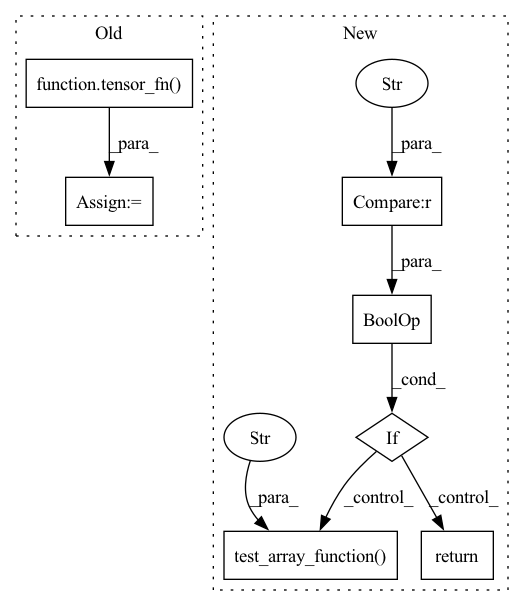

Pattern ID :650
Before Change
pytest.skip()
x, filters, padding, output_shape, true_res = x_n_filters_n_pad_n_outshp_n_res
x = tensor_fn(x, dtype=dtype, device=device)
filters = tensor_fn( filters, dtype=dtype, device=device)
true_res = tensor_fn(true_res, dtype=dtype, device=device)
ret = ivy.conv2d_transpose(x, filters, 1, padding, output_shape)
// type test
assert ivy.is_ivy_array(ret)
// cardinality testAfter Change
if fw in ["numpy", "jax"]:
// numpy and jax do not yet support conv2d_transpose
return
if fw == "torch" and ("16" in dtype[0] or "16" in dtype[1]) :
// not implemented for Half
return
x = np.random.uniform(size=array_shape).astype(dtype[0])
x = np.expand_dims(x, (-1))
filters = np.random.uniform(size=(filter_shape,
filter_shape,
1,
1)).astype(dtype[1])
helpers.test_array_function(
dtype,
as_variable,
False,
num_positional_args,
native_array,
container,
instance_method,
fw,
"conv2d_transpose" ,
x=x,
filters=filters,
strides=stride,
padding=pad,
output_shape=tuple(output_shape),
data_format=data_format,
dilations=dilations
)
// depthwise_conv2d
@pytest.mark.parametrize(In pattern: SUPERPATTERN
Frequency: 3
Non-data size: 7
Instances Fragment ID: 3048622
Project Name: ivy-dl/ivy
Commit Name: 39affe0abf7984fcc464eb157f58159ee6aaf837
Time: 2022-06-16
Author: sherrytst30@gmail.com
File Name: ivy_tests/test_ivy/test_functional/test_nn/test_layers.py
M Class Name: AnonimousClass
N Class Name: AnonimousClass
M Method Name: test_conv2d_transpose(15)
N Method Name: test_conv2d_transpose(5)
M Parent Class:
N Parent Class:
M File Name: ivy_tests/test_ivy/test_functional/test_nn/test_layers.py
N File Name: ivy_tests/test_ivy/test_functional/test_nn/test_layers.py
M Start Line: 364
M End Line: 386
N Start Line: 325
N End Line: 372
Before Change
// mxnet only supports 3d transpose convolutions with CUDNN
pytest.skip()
x, filters, padding, output_shape, true_res = x_n_filters_n_pad_n_outshp_n_res
x = tensor_fn( x, dtype=dtype, device=device)
filters = tensor_fn(filters, dtype=dtype, device=device)
true_res = tensor_fn(true_res, dtype=dtype, device=device)
ret = ivy.conv3d_transpose(x, filters, 1, padding, output_shape)
// type test
assert ivy.is_ivy_array(ret)
// cardinality testAfter Change
if fw == "mxnet" and "cpu" in device:
// mxnet only supports 3d transpose convolutions with CUDNN
return
if fw == "torch" and ("16" in dtype[0] or "16" in dtype[1]) :
// not implemented for half
return
x = np.random.uniform(size=array_shape).astype(dtype[0])
x = np.expand_dims(x, (-1))
filters = np.random.uniform(size=(filter_shape,
filter_shape,
filter_shape,
1,
1)).astype(dtype[1])
helpers.test_array_function(
dtype,
as_variable,
False,
num_positional_args,
native_array,
container,
instance_method,
fw,
"conv3d_transpose" ,
x=x,
filters=filters,
strides=stride,
padding=pad,
output_shape=output_shape,
data_format=data_format,
dilations=dilations
)
// LSTM //
// -----// Fragment ID: 3048616
Project Name: ivy-dl/ivy
Commit Name: 207b540aa93cb3d2234b2b7d58c1d4e6e58a9467
Time: 2022-06-17
Author: sherrytst30@gmail.com
File Name: ivy_tests/test_ivy/test_functional/test_nn/test_layers.py
M Class Name: AnonimousClass
N Class Name: AnonimousClass
M Method Name: test_conv3d_transpose(15)
N Method Name: test_conv3d_transpose(5)
M Parent Class:
N Parent Class:
M File Name: ivy_tests/test_ivy/test_functional/test_nn/test_layers.py
N File Name: ivy_tests/test_ivy/test_functional/test_nn/test_layers.py
M Start Line: 825
M End Line: 851
N Start Line: 634
N End Line: 687
Before Change
@pytest.mark.parametrize("tensor_fn", [ivy.array, helpers.var_fn])
def test_vector_to_skew_symmetric_matrix(x, dtype, tensor_fn, device, call):
// smoke test
x = tensor_fn( x, dtype, device)
ret = ivy.vector_to_skew_symmetric_matrix(x)
// type test
assert ivy.is_ivy_array(ret)
// cardinality testAfter Change
fw,
a,
):
if "float16" or "int8" in input_dtype :
return
helpers.test_array_function(
input_dtype,
as_variable,
with_out,
num_positional_args,
native_array,
container,
instance_method,
fw,
"vector_to_skew_symmetric_matrix" ,
vector=np.random.uniform(size=(a, 3)).astype(input_dtype[0]),
)
// matrix_power
@given( Fragment ID: 3048617
Project Name: ivy-dl/ivy
Commit Name: 041b65a10b0ebdad341c4f160f1105e2193ece0b
Time: 2022-06-13
Author: darshanjhe@gmail.com
File Name: ivy_tests/test_ivy/test_functional/test_core/test_linalg.py
M Class Name: AnonimousClass
N Class Name: AnonimousClass
M Method Name: test_vector_to_skew_symmetric_matrix(9)
N Method Name: test_vector_to_skew_symmetric_matrix(5)
M Parent Class:
N Parent Class:
M File Name: ivy_tests/test_ivy/test_functional/test_core/test_linalg.py
N File Name: ivy_tests/test_ivy/test_functional/test_core/test_linalg.py
M Start Line: 32
M End Line: 42
N Start Line: 29
N End Line: 47